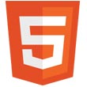
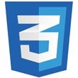
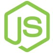
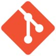

-
Sobre
Olá, me chamo Wesley Lima, 27 anos, vivo em Mogi das Cruzes onde realizo trabalhos como desenvolvedor web, e atualmente curso o último semestre em Sistemas de Informação pela Universidade de Mogi das Cruzes.
Desde cedo demonstrei interesse por tecnologia. Passando por diversos cursos, inclusive técnico em elétrica, até que consegui finalmente encontrar aquilo que realmente me completa.
Mesmo antes de a graduação começar, já procurava buscar conhecimentos desmontando e entendendo o interior dos computadores, inclusive auxiliando na resolução de problemas computacionais de amigos e familiares. Aquilo que era só diversão levou-me hoje a buscar oportunidades mais sérias dentro e fora do campus.
Atualmente, desenvolvo projetos pessoais que além de me proporcionar uma tremenda felicidade em criar algo, também contribuem para meus conhecimentos.
Em meus projetos tento criar o mais simples e intuitivo o quanto possível, sem perder foco no design e usabilidade.
Minhas habilidades estão em constante evolução graças ao meu grande espírito autodidata e também aos grupos que participo, GUJ, jQuery Brasil e NodeJS Brasil, onde todos contribuímos para sanar dúvidas que surgem em nosso dia a dia.
-
Qualificação
Formação Acadêmica
8º Semestre em Sistemas de Informação – Universidade de Mogi das Cruzes
Idiomas
Inglês intermediário – CCAA
-
Habilidades
Legenda
- Básico
- Intermediário
- Avançado
 HTML5
-
Técnicas
Tableless Web Standards Responsive Design -
Frameworks
Boilerplate Initializr jQuery Mobile KineticJS
 CSS3
Javascript
-
Biblioteca
jQuery
IDE
SEO/SEM
-
Técnicas
Performance Usabilidade Link Building Link Bait
Design
-
Técnicas
Diagramação Wireframe -
Softwares
Illustrator Photoshop
 Node.JS
Java
-
Técnica
Restful -
Módulos
RMI Apache Tiles Servlet JSTL EL JSP Bean Validation Jackson -
Frameworks
Spring 3.x Spring MVC 3.x Hibernate JUnit
PHP
Pascal
MongoDB
-
Módulo
mongoose
PostgreSQL
MySQL
 Controle de Versão
-
Software
Git

CMS/SGC
-
Projetos
Respawn Timer
2012-2013
Gyulpon
2012
Braskem
2012
Almir Bindilatti
2011
Padronagem
2011
Vivian de Campos
2011
-
Experiência Profissional
02/2011 a 06/2012 -Trupi Interativa
Desenvolvimento front-end de mídias digitais com criação de aplicativos para smartphones, tablets, websites e e-mail marketing.
Entre meus conhecimentos adquiridos ao longo desse tempo estão HTML5, CSS3, JQuery, Wordpress, Illustrator e Photoshop juntamente com técnicas de criação. Para o desenvolvimento das aplicações web utilizava Eclipse com plugins Aptana ou Dreamweaver. Em alguns casos criava estruturas em php para agilizar a integração front-end com back-end.
-
Contato
Vivo em
Mogi das Cruzes - São Paulo
Contato por voz
Contato por escrita